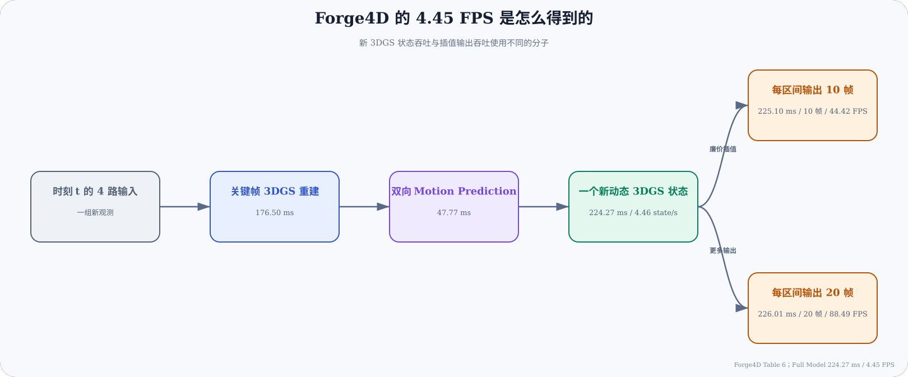

核心结论
Key-frame Reconstruction = 176.50 ms 只是 full model 的第一段，并不等于整个动态状态已经输出。Motion Prediction = 47.77 ms，因此 full model 为 224.27 ms；1000/224.27≈4.46，论文报告为 4.45 FPS。10/0.22510 和 20/0.22601 得到 44.42/88.48 输出 FPS；新观测更新率仍约 4.45 FPS。关键证据
计算过程
从第二个时间点开始，Forge4D 要完成两件事。第一，用当前时刻的四路输入重建一组 pixel-aligned 3D Gaussians，论文测得 176.50 ms。第二，把前一时刻与当前时刻的中间 features 做 cross-attention，预测 backward/forward 3D motion，再做动态融合，motion prediction 为 47.77 ms。
两部分在论文的 full-model 口径中按一次新状态顺序执行：176.50+47.77=224.27 ms。于是 steady-state throughput 为 1/0.22427=4.459 个新状态每秒，四舍五入就是 4.45 FPS。这里没有额外的神秘加速，也不是说 176 ms 模块本身能跑 4.45 FPS。
第一帧没有前一帧可供运动估计，理论上只需静态重建；但稳定运行到后续帧时，每个新时刻都需要完成重建和相邻帧 motion，系统吞吐按 224.27 ms 计算。

为什么插值后会显示 44.42 或 88.48 FPS
Full Model 一次区间只计一个新动态状态，所以分子是 1：1/0.22427≈4.46。
+Interpolate 10 Steps 一次相邻关键帧区间总计 225.10 ms，却输出 10 个时间采样，因此论文用 10/0.22510=44.42 FPS。+Interpolate 20 Steps 同理：20/0.22601≈88.49 FPS。
这些额外帧通过已预测的双向运动和 Gaussian fusion 生成，不重新吸收新的相机观测。所以观看端可以是 44/88 FPS，但如果人物突然做了新动作，模型仍要等下一次约 224 ms 的状态更新才能反映出来。
正确的四个性能指标
这是否使用了流水线并行
论文 Table 6 没有声明通过跨帧 pipeline parallel 把 176.50 ms 和 47.77 ms 重叠；从 full latency 恰好接近两者之和来看，报告口径是串行端到端。
理论上可以在多 stream 或多 GPU 上让下一时刻的静态重建与上一时刻的 motion/fusion 部分重叠，但 motion 依赖相邻两帧 features，state token 也按时间递推，实际调度需要处理依赖、显存占用和同步。论文的 4.45 FPS 不包含这种额外优化。
局限与开放问题
- Table 6 单列
Interpolation (10 Steps)=1.46 ms，但 Full Model 与 +10 行的差为 0.83 ms，可能来自独立 microbenchmark、测量噪声或统计口径差异；不影响 4.45 FPS 的主计算。 - 论文使用 FPS 一词同时描述新状态与插值输出，若不看分子数量容易误解。
- 当前公开 checkpoint 尚未发布，因此无法对 Table 6 在本地复测。
证据与推断边界
- 论文表格直接给出 176.50、47.77、224.27 ms 和 4.45 FPS。
10/0.22510、20/0.22601是对论文插值行数值的算术解释。- 跨 GPU pipeline overlap 是工程推断，不是 Forge4D 论文报告能力。
来源与版本
核查时间：2026-11-10（Asia/Shanghai）。本页专门解释 Forge4D Table 6 的速度口径。
- Forge4D paper — Table 6 speed ablation
- Forge4D code